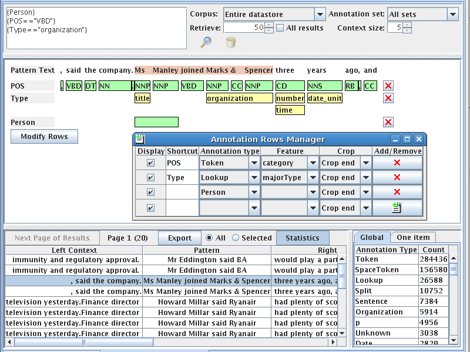
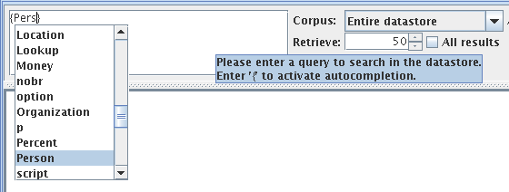

to view
application messages.
to view
application messages.This document briefly describes Graphic User Interface of the Annic GUI.
The main window contains two parts: toolbar and annic GUI.
After successful connection to the document service and having found the provided corpus in the searchable datastore, the Annic GUI is loaded. This GUI allows issuing various queries to the selected corpus and annotation set and retrieve patterns from the corpus. More information about the Annic GUI is provided at the end of the section.
Click button to view
application messages.
Click button  to display this
help window.
to display this
help window.
Click button  to edit the
settings of the Annic GUI, for example the look and feel and fonts used.
to edit the
settings of the Annic GUI, for example the look and feel and fonts used.
If you want to exit application simply close main window.

Figure 1: Annic GUI.
Figure 1 gives a snapshot of the GUI. The top section contains a text area to write a query, options to select the input data and the output format and two icons to execute and delete a query. The central section shows a graphical visualisation of annotations and values of the result selected in the bottom results table. You can also see the annotation rows manager window where you define which annotation type and feature to display in the central section. The bottom section contains the results table of the query, i.e. the text that matches the query with their left and right contexts, the annotation set and the document. The bottom section contains also a tabbed panes of statistics.
JAPE patterns also support the | (OR) operator. For instance, {A} ({B}|{C}) is a pattern of two annotations where the first is an annotation of type A followed by the annotation of type either B or C. ANNIC supports two operators, + and *, to specify the number of times a particular annotation or a sub pattern should appear in the main query pattern. Here, ({A})+n means one and up to n occurrences of annotation {A} and ({A})*n means zero or up to n occurrences of annotation {A}.
A text-area located in the top left part of the GUI is used to input a query. You can copy/cut/paste with Control+C/X/V, undo/redo your changes with Control+Z/Y as usual. To add a new line, use Control+Enter combination keys.

Figure 2: Annic GUI - Auto-completion.
Auto-completion shown on the figure 2 for annotation type is triggered when typing "{" and for feature when typing "." after a valid annotation type. It shows only the annotation types and features related to the selected corpus and annotation set. If you right-click on an expression it will automatically select the shortest valid enclosing brace and if you click on a selection it will propose you to add quantifiers for allowing the expression to appear zero, one or more times.
To execute the query, click on the magnifying glass icon, use Enter key or Alt+Enter combination keys. To delete the query, click on the trash icon or use Alt+Backspace combination keys.
It is possible to have more than one corpus, each containing a different set of documents, stored in a single data-store. ANNIC, by providing a drop down box with a list of stored corpora, also allows searching within a specific (selected) corpus. Similarly a document can have more than one annotation set indexed and therefore ANNIC also provides a drop down box with a list of indexed annotation sets for the selected corpus.
A large corpus can have many hits for a given query. This may take a long time to refresh the GUI and may create inconvenience while browsing through patterns. ANNIC therefore allows you to specify a number of patterns that you wish to retrieve at once and provides a way to iterate through next pages with the Next Page of Results button. Due to technical complexities, it is not possible to visit a previous page. It is however possible to tick a check-box for retrieving all the results at the same time.
Annotation types and features to show can be selected from the annotation rows manager in clicking on the Modify Rows button in the central section. When you choose to show a feature of an annotation (e.g. feature category for annotation type Token), the central section shows coloured rectangles where the annotation type are existing containing values of those features. When you choose to show only one annotation type in letting the feature column empty then all its features are displayed with empty rectangles that show their features values in a pop-up window when the mouse is over the rectangles.
Shortcuts are expression that stand for an ”AnnotationType.Feature” expression. For example, on the figure 1, the shortcut ”POS” stands for the expression ”Token.category”. The purpose is to make the query more readable.
When you left-clicks on any of the rectangles of the annotations rows, the respective query expression is placed at the caret position in the query text area or replace the selected expression, if any. You can also click on a word on the first line to add it to the query.
In the table of results, ANNIC shows each pattern retrieve from the last query executed on a row and provides a tool tip that shows the query that the selected pattern refers to.
Along with its left and right context texts, it also lists the names of the document and the annotation set that the patterns come from. When the focus changes from one row to another, the central section is updated accordingly. You can sort a table column in clicking on its header.
You can remove a result from the results table in right-clicking on a result in the results table.
ANNIC provides an Export button to export in an HTML file all the results or only the selected results.
A statistics tabbed pane can be displayed on the bottom-right when clicking on the Statistics button. There is always a global statistics pane that list the count the occurrences of all annotation types for the selected corpus and annotation set.
Statistics can be obtain in 16 different ways for the datastore, matched spans of the query in the results, with or without contexts and for an annotation type, a annotation type + feature or an annotation type + feature + value. A second pane contains the one item statistics that you can add in right-clicking on a non empty rectangle or on the header of a row in the central section. You can sort a table column in clicking on its header.